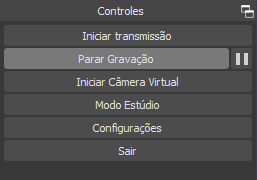

Gravação e edição de vídeos
Um guia rápido e prático

Open Broadcast Software
O OBS Studio é um software gratuito e de código aberto para gravação de vídeo e transmissão em tempo real, disponível para Windows, macOS e Linux.
Sumário
Primeiros passos
Quando o OBS é iniciado pela primeira vez, o assistente de configuração aparecerá na tela. Caso ele não apareça, é possível abri-lo através do menu Ferramentas.

O assistente de configuração fará uma série de perguntas para otimizar o funcionamento do programa, de acordo com o hardware do computador e suas preferências pessoais.
A primeira pergunta será a respeito do uso primário do programa. No nosso caso, selecionaremos a segunda opção, Otimizar somente para gravação, eu não farei transmissão.
Em seguida, o programa perguntará sobre alguns aspectos da gravação de vídeo.
A opção de resolução de base (tela) rege o tamanho do arquivo final em pixels. O ideal é que esta opção coincida com a resolução atual do seu monitor, portanto, selecione a opção Usar Atual.
FPS é a sigla em inglês para Quadros Por Segundo. Números maiores produzirão vídeos com movimentação mais suave, porém, o arquivo final terá um tamanho maior. O valor recomendado é 30, por ser um intermediário entre fluidez e tamanho.
Nesta última tela, o assistente de configuração exibirá as configurações que serão aplicadas. Basta clicar em Aplicar Configurações para continuar.

Os valores podem ser diferentes no seu computador.
Explorando a interface
- Área de pré-visualização
- Seletor de cenas
- Seletor de fontes
- Mixer de áudio
- Seção de controles
Explorando a interface – Seletor de fontes
Antes de podermos utilizar as outras opções da interface, precisamos adicionar uma fonte de vídeo para capturar. Para fazer isto, basta clicar no botão + do seletor de fontes (3). Várias opções aparecerão.
Vamos, primeiro, selecionar a opção Captura de tela, para que toda a tela do computador seja gravada. Posteriormente será ensinado como gravar uma janela específica.
Na janela que surgirá, certifique-se de que as opções Criar Nova e Tornar a Fonte visível estão ativadas, depois, clique em Ok.
Na próxima janela que será aberta, selecione o monitor que você deseja gravar e marque a caixa Capturar o Cursor caso queira que o cursor do mouse apareça na gravação.
A fonte Captura de tela aparecerá na área de pré-visualização (1). Você pode arrastá-la para mudar sua posição ou utilizar os pontos vermelhos para ajustar o seu tamanho.
Explorando a interface – Seletor de cenas
Cenas podem ser utilizadas para alternar rapidamente entre diferentes fontes de vídeo. Vamos criar uma cena para melhor enteder o seu funcionamento.
Clique no botão + do seletor de cenas (2). Um diálogo pedindo um nome aparecerá. Daremos o nome "Captura de janela" para a cena.
Note que a visualização da tela do computador desapareceu.
Vamos experimentar mais um pouco, criando uma fonte de Captura de janela. Para fazer isto, clique no botão + do seletor de fontes (2).
Na janela que surgirá, certifique-se de que as opções Criar Nova e Tornar a Fonte visível estão ativadas, depois, clique em Ok.
Na próxima janela que será aberta, utilize a caixa de seleção da opção Janela para indicar a janela que você deseja gravar. As demais opções podem ser deixadas em seus respectivos valores padrão. Clique em Ok quando tudo estiver pronto.
Uma fonte de captura de janela exibindo uma janela do Google Chrome. Note o [chrome.exe] na caixa de seleção da opção Janela.
A janela selecionada ganhará uma borda amarela e será adicionada à área de pré-visualização.
Para alterar a seleção de janela, clique nas Propridades settings (1) da fonte ou utilize a aba de acesso rápido (2).
Para voltar a capturar a tela inteira, utilize o seletor de cenas.
Explorando a interface – Mixer de áudio
O mixer de áudio exibe, em tempo real, os sons do sistema e do microfone, permitindo, também, o ajuste do volume de ambos. Caso o som desejado não esteja aparecendo na barra de decibéis, clique na engrenagem (settings) do respectivo dispositivo e vá em Propriedades para selecionar o dispositivo correto.
Ajustando as configurações
Não há muito mais a ser configurado, portanto, revisaremos algumas opções.
Abra as Configurações na seção de controles.
Nas configurações de áudio, certifique-se de que a taxa de amostragem é de 44,1 kHz.
Nas configurações de saída, certifique-se de que a qualidade da gravação está configurada como Alta qualidade, tamanho médio. O formato de gravação deve ser mkv.
Nesta página você também pode conferir ou alterar o local de salvamento das gravações.
Lembre-se, também, da Taxa de Bits do Vídeo, a primeira opção da página, pois podemos precisar dela mais tarde.
Gravando um vídeo
Com tudo configurado, podemos gravar um vídeo para verificar se está tudo em ordem.
Para gravar um vídeo, clique em Iniciar gravação na seção de controles.
O botão de iniciar gravação será substituído pelos botões de interrupção e pausa.
Mexa no computador por alguns minutos, enquanto a gravação está em curso. Depois, interrompa a gravação e abra o arquivo que foi criado.
Caso você não consiga abrir o arquivo .mkv, faça o download do VLC.
Analise a gravação e veja se a imagem está com uma boa qualidade.
Caso a imagem tenha saído quadriculada, borrada ou estranha, tente ajustar a Taxa de Bits do Vídeo nas configurações de Saída.
O ideal é que a Taxa de Bits do Vídeo tenha um valor entre 2500 e 10000 Kbps. Experimente aumentar este valor de mil em mil (se estava 2500, tente 3500) até que a imagem saia como o desejado.
Lembre-se de que valores maiores produzirão arquivos maiores!